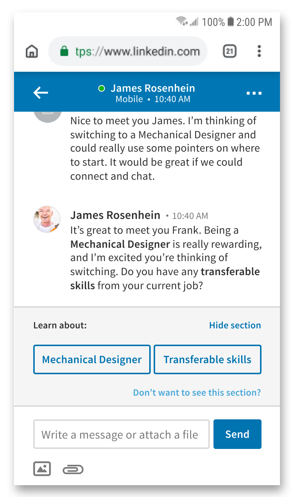

Project Name: LinkedIn Blueprint
Project Year: 2018
Course: Senior User Experience Design
LinkedIn Blueprint is a mobile and desktop web solution aimed to help a smaller demographic on LinkedIn - trades workers - get started with a career switch by connecting them to mentors on LinkedIn who can give assistance and advice, as well as providing a network of support from a community of others going through similar career switches.
Job automation has been a hot topic over the past few years, and research reveals that it is becoming a reality for many construction, agriculture, and manufacturing jobs.

But where does LinkedIn come in? The Financial Times reported in 2015 that LinkedIn co-founder Allen Blue wanted to actively target "blue-collar" workers and bring them into the site's userbase. The article writes that LinkedIn is seen as mainly for "white-collar" (or "knowledge") workers, and the company wishes to expand beyond this demographic. LinkedIn Blueprint aims to attract trades workers as new customers through addressing the growing need for construction, agriculture, and manufacturing workers to switch occupations - providing a career-planning tool, networking, and support via mentors and a community of people going through similar career transitions.
The prototype flow follows the story of a factory worker who is looking to switch careers due to factory automation. The final product shown is my product redesign after the course to create a solution that focuses further on LinkedIn's strength in networking and community, uses less resources for LinkedIn to implement, and provides a more supportive user experience.
The factory worker is introduced to LinkedIn Blueprint through targeted Facebook advertisements that use information from recent google searches (such as topics around job automation). The landing page following the ad employs the narrative of a factory employee who switched jobs successfully using LinkedIn Blueprint, in order to build a connection with the worker. LinkedIn Blueprint can also be accessed as a link within the Jobs page of LinkedIn.
Blueprint uses information gathered from questions in order to find and connect the worker to LinkedIn Mentors with similar skills, who have gone through similar career switches. The design solution follows the path of a worker who already knows which career they're switching to; if the worker does not know yet, they will be directed to information curated by LinkedIn or LinkedIn-approved sources to help them make a more informed decision.
Once the worker finishes the questionnaire, they are given LinkedIn Mentor suggestions. Mentor profile images and names are anonymous due to LinkedIn privacy policies. Each mentor has a Career Journey: a timeline that follows what actions, accomplishments, and steps the mentor took throughout their career transition. The Career Journey is shown as a preview in the page to entice the user to learn more.
In order to view the mentor's profile, which contains more personal information, the worker must create a LinkedIn account. The mentor's profile contains their full Career Journey, as well as a section on how transferable skills can be used across different careers.
Tapping into the Career Journey expands it into its own section. The timeline takes the worker through each action, achievement, or milestone the mentor went through during their journey by using narrative, icons, and fun animations to keep the interaction interesting. At the end, the worker is introduced to the next steps they can take to kickstart their own career-switching journey.
One of the possible steps is for the worker to "build a Career Blueprint", which is a career-switching plan where they can plan their transition into another industry by adding career-specific goals, such as gaining connections. The Career Blueprint acts as a networking tool, as the worker can share their Blueprint to open a conversation between mentors or other people going through a related career switch. The worker can also view other people's Blueprints gain inspiration or see if they are missing steps, as well as keep track of the career-switching progress of others in their community.
The goals also leverage other LinkedIn offerings to help the worker with completing those goals and to bring further value to the business. For example, Blueprint might suggest LinkedIn Learning for a skill-related goals or offer to connect the worker to more LinkedIn Groups for networking goals. When creating a post in a LinkedIn Group or messaging another person, the worker will have the option to share their Career Blueprint.
My team conducted 5 in-depth user interviews to better understand the demographic we were designing for. We chose user interviews over surveys due to needing detailed responses that surveys could not capture.

I created a persona of a user we would focus on while designing, using understanding and insights gained from the user interviews. The persona helped me focus my redesign of our solution to be clearer and more specific towards the user's needs and goals.
The user interviews also helped me map out my persona's journey below. During the design process, I felt that LinkedIn's platform and strengths could best target the "Plans Ahead" stage of the journey, due to the user needing more personal and unique support, and LinkedIn has many professionals of varying backgrounds who may be qualified to advise him. The planning stage is also long-term compared to other stages, and focusing the design solution on the longer stage creates a longer period of engagement with the business.
The design solution my team and I created for this project (before my revisit) was a tool to help suggest possible careers - based on transferable skills - for our user to switch to, connect them to LinkedIn Mentors in the career suggestions they're interested in, and also present "smart help" during online messaging sessions to teach the user specific industry terms.
My role in the original team concept was content strategy, copywriting, some interaction design, and user interface design (including low to high fidelity wireframing, prototyping, and visual design).
How might we leverage LinkedIn's strength as a professional networking site to help trades workers affected by automation make informed decisions about their career? This frame lead us to focus on a user who had been hearing about and seeing automation affect his co-workers. Our user was uncertain about their future but had not decided on a course of action yet.
Mobile-First Website: We had initially assumed that trades workers would be more likely to use a computer when searching for job prospects or simply browsing. However, over half of our user interview participants mentioned using mobile devices more frequently - especially when browsing social media. Since our user is introduced to LinkedIn Blueprint through a targeted social media ad, I determined that a mobile-first website would keep the user more engaged, as it does not require them to be taken out of the experience by needing to download an app early on.
LinkedIn Branding: My team and I decided to work within LinkedIn's existing branding, color, and style guide, as LinkedIn Blueprint is an addition to LinkedIn's established main website. Blueprint also gives value to the business by connecting the user to other LinkedIn offerings and parts of their site.
After the course was over, I re-assessed the project and felt that our solution lacked cohesion. It contained three surface-level solutions combined into one: a way to suggest career options, a way to connect the user to a mentor, and a way to make user-mentor messaging more interactive. Our solution also did not fully utilize LinkedIn's strength surrounding networking and creating connections. The main changes I made are:
Change of User Persona: Deciding which career to switch to is a time-consuming and difficult decision, which probably cannot be helped by a 3-step questionnaire. This was due to our persona being vague - they knew about automation displacing jobs in their industry, but had not decided on a course of action. I adjusted our persona to someone who still has similar pains and behaviors, but already has an idea of their next career.
Focus of the Questionnaire: The questionnaire's original purpose was to suggest possible career options to the user. However, now that I had changed the persona, I changed the purpose of the questionnaire to only connecting the user to LinkedIn Mentors. The questionnaire uses a combination of the user's current job, the skills they pick, and their desired career to curate a list of mentors of interest to the user.
Ease of Implementation: Some aspects of our solution, such as the Career Journey Previews, would require a large amount of resources from LinkedIn to implement. The Previews originally used photos to visually represent jobs. However, each job type would require its own image - potentially thousands of unique images. I changed the preview to pull from the full Career Journey instead, which uses a set number of icons across different types of goals.
No more Smart Messaging: My decision to remove our smart messaging feature was due to the fact that although it was designed to engage the mentor and user, it actually takes the user away from the current conversation with the mentor, to reading more generic information in the chat window or on other parts of the site. It is also difficult to implement (LinkedIn would need to write hundreds to thousands of definitions for different terms).
Career Blueprint: I took inspiration from and built upon a previous, rough idea my team and I had of a "career plan" to create the Career Blueprint; its main purpose becoming a tool for connecting the user to mentors and other people going through similar career switches. I felt that integrating LinkedIn Groups was a great way for the user to find a community, and being able to share and discuss each other's Career Blueprints within the group would encourage more connections. The Career Blueprint is also an easy way for the mentor to understand the user's plans and thus, give more informed advice.
User Interface: My team and I had the opportunity during the course to present a previous iteration of our project to LinkedIn User Experience professionals. They gave valuable feedback regarding mobile interfaces, interactions, and touch sizes, which I used in my redesign. One example is changing the questionnaire from being vertical and scrollable to having each step on its own screen, so that the user's attention will be focused at every step.
This project was a great experience in learning how to design within existing brand guidelines, and thinking of a product design that could fit in and link to other solutions provided by LinkedIn to bring value to both the target user and LinkedIn as a business. The greatest challenge was figuring out how to scope down and design using LinkedIn's strengths, rather than trying to come up with a product completely different from what LinkedIn is known for.
Thanks for reading about my project! This project was created in a team of myself, Jessie Li, Emily Hui, Simranjit Bagga, Ali Reza Mogharrab, and Momchil Kutev.
https://www.mckinsey.com/featured-insights/future-of-work/jobs-lost-jobs-gained-what-the-future-of-work-will-mean-for-jobs-skills-and-wages
https://brand.linkedin.com/
https://www.ft.com/content/edc2ce7e-9a40-11e4-8426-00144feabdc0
https://www.oecd-ilibrary.org/employment/automation-skills-use-and-training_2e2f4eea-en
https://www.youthemployment.org.uk/dev/wp-content/uploads/2018/05/civil-engineer-technician-careers.png
https://i3.wp.com/be-a.co.uk/wp-content/uploads/2013/06/engineer-earnings.jpg
https://thenounproject.com/